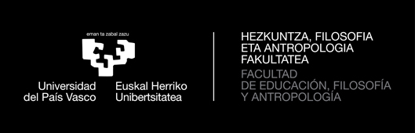
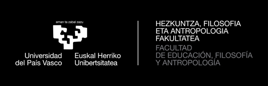
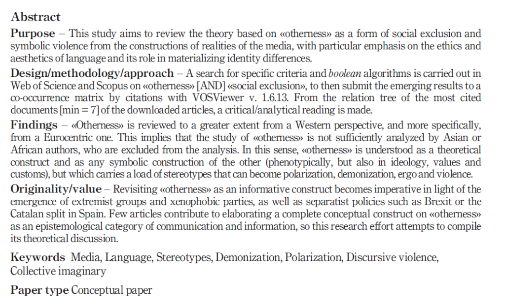
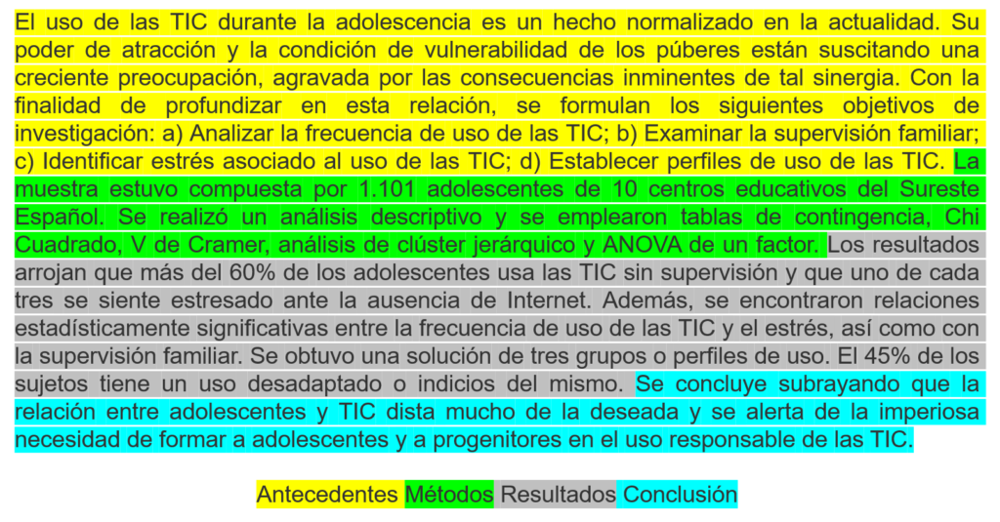

PORTADA
Izenburua
IZENBURUA laburra, esanguratsua, zehatza, bereizgarria,erakargarria, argia, garrantzia, interesa, atentzioa…
Ikusizko laguntza

IZENBURUA laburra, esanguratsua, zehatza, bereizgarria,erakargarria, argia, garrantzia, interesa, atentzioa…

LABURPENA (gaztelaniaz, euskaraz eta ingelesez edo frantsesez; gehienez ere 100 hitzekoa hizkuntza bakoitzean) eta GAKO-HITZAK (gehienez 5). Lanaren inguruko SINTESI INFORMATZAILE EGITURATUA egin behar da. Hizkuntza bakoitza párrafo bakar batean.
Egituraketa IMRD Formatuaren bitartez egin behar da. Horretarako, lanaren osagai guztiei lerro batzuk eskaini beharko zaizkio: Lanaren SARRERA (justifikazioa, garrantzia eta helburua), Erabilitako ikerketa METODOaren deskribapen bat, Ikerketan lortutako EMAITZA garrantzitsuenak, Lanaren ONDORIO Nagusia.

Zuzendariari, Partehartu dutenei, Familiari...
Zenbakitua eta ordenatua.
Zenbakitua eta ordenatua.
Zenbakitua eta ordenatua.
Ondoko lizentziak babestua Creative Commons: aitortu-PartekatuBerdin 4.0 Lizentzia